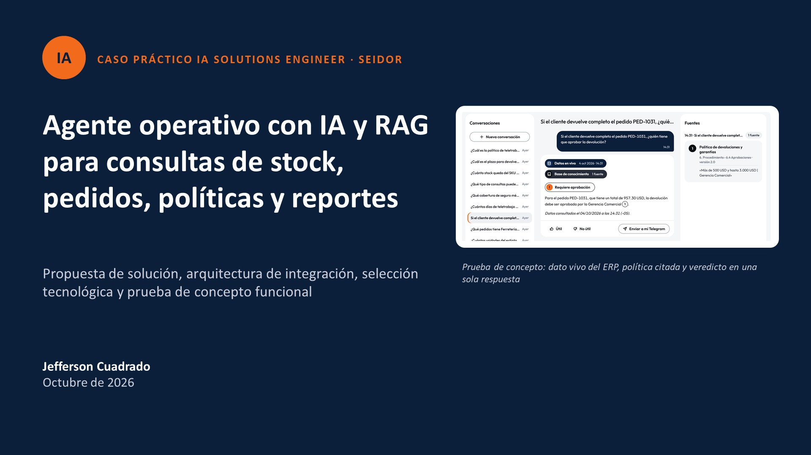

Agente operativo con IA y RAG para consultas de stock, pedidos, políticas y reportes
Propuesta de solución, arquitectura e integración, selección tecnológica y demostración práctica (PoC). Use las flechas del teclado para avanzar y la tecla F para pantalla completa; Esc regresa a esta página.
